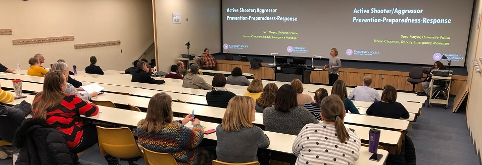

Creative Technologies Courses (CTK)

100-Level Classes
- 201 – Foundations: Audio Theory (3)
Introduces fundamentals of audio theory as applied to the physics and aesthetics of sound.
- 202 – Foundations: Recording and Sampling (3)
Techniques and methods used in the recording and sampling of sound.
- 203 – Foundations: Music Concepts (3)
Fundamentals of music concepts including theory, history, genres, and form.
- 204 – Music Production I (3)
Introduces production techniques using digital audio workstations (DAWs).
200-Level Classes
- 260 – Computer Programming for Creatives (3)
Introduces programming concepts for interactive design, installation, and multimedia.
- 261 – Digital Design I: Imaging, Digital Audio, and Video (3)
Introduces digital media production including image editing, audio design, and video editing.
- 262 – Live Performance (3)
Explores interactive performance integrating computer technology with live audio, video, and stage production.
300-Level Classes
- 301 – Advanced Web-Based Design and Development (3)
Advanced programming concepts for dynamic web and multimedia applications.
- 320 – Topics in Creative Technologies (3)
Explores advanced issues such as VR, generative art, and interactive installations.
- 340 – Advanced Game Design (3)
Advanced techniques in game mechanics, level design, and immersive environments.